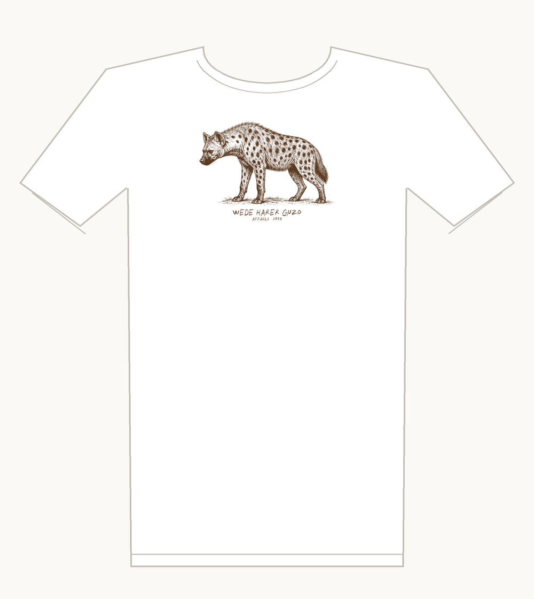
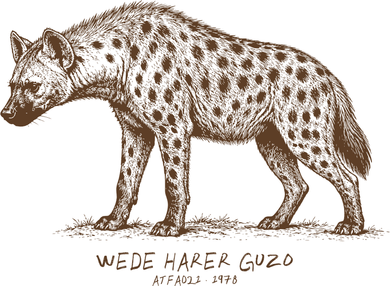

Wede Harer Guzo tee
A spotted hyena. The title means “Journey to Harar”, and Harar’s old walled city is famous for its hyenas.
White tee, brown ink, one color · Bella+Canvas 3001 · S to 2XL
Printed on the front: WEDE HARER GUZO, ATFA021 · 1978
Buy $32
Shipping is $5, US only. Each shirt is printed when you order it and ships in about a week. Questions: reate.records.stardust299@slmail.me.

The record
Hailu Mergia & Dahlak Band – Wede Harer Guzo
Awesome Tapes From Africa ATFA021 · 1978 · on Discogs
I’ve played it 274 times on Spotify.
Play the record
Recorded over three afternoons in 1978 at the Ghion Hotel in Addis Ababa, where the Dahlak Band was the house band.
It came out on cassette through a local shop, the Sheba Music Shop. Hailu’s own tape was the only known copy; Awesome Tapes From Africa restored it for the 2016 reissue (ATFA021).
Hailu plays organ and arranged it. Muluken Melesse and Rida Ibrahim sing, with Tilaye Gebre on sax and Shimelis Beyene on trumpet.
Hailu later moved to the US and drove a taxi out of Dulles Airport, practicing keyboard in the car between fares, until these reissues put him back on stage.
A fan’s tribute to the record, not official merchandise of the artist or label.